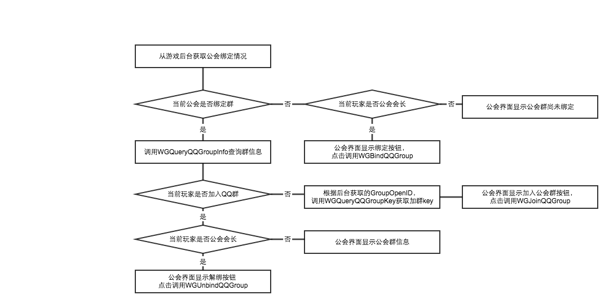

name: inverse layout: true class: center, middle, inverse --- # 手Q加绑群相关介绍～ <BR> ------ ## MSDK Android 游戏联调支撑交流系列 — hardyshi --- layout:false class: ##1. 使用场景 ##2. 接入工作 ##3. 推荐流程 ##4. 常见问题 --- ## 使用场景 主要用于游戏玩家的聚合，增强游戏玩家之间的交流。 ### 对于游戏 - 至少要有公会吧 - 大区其实是非必需的，只要保证公会唯一即可。没有大区的，填0就行 ### 对于具体的公会 - 有个会长 - 会长有自己的QQ群 --- ## 接入工作 ### 设置加群相关回调。 - 查询、绑定、解绑、查询群key - 绑群回调成功不表示成功（opensdk不支持），收到绑定成功的回调然后再去查询，查询有才算成功 - 游戏内加群、加好友因为还需要验证，因此没有回调 ### 按照推荐流程调用接口实现功能 | 调用接口 | 接口名称| 支持版本 | |: ------------- :| | 绑定QQ群 | [WGBindQQGroup](http://wiki.dev.4g.qq.com/v2/ZH_CN/android/index.html#!group.md#绑定QQ群) | MSDK 1.7.5a | | 查询公会QQ群信息 | [WGQueryQQGroupInfo](http://wiki.dev.4g.qq.com/v2/ZH_CN/android/index.html#!group.md#查询QQ群绑定信息)|MSDK 2.7.0a | | 查询公会QQ群加群key | [WGQueryQQGroupKey](http://wiki.dev.4g.qq.com/v2/ZH_CN/android/index.html#!group.md#获取加入QQ群的key) | MSDK 2.8.0a | | 加入公会QQ群 | [WGJoinQQGroup](http://wiki.dev.4g.qq.com/v2/ZH_CN/android/index.html#!group.md#加入QQ群) | MSDK 1.7.5a | | 解绑公会QQ群 | [WGUnbindQQGroup](http://wiki.dev.4g.qq.com/v2/ZH_CN/android/index.html#!group.md#解绑QQ群) | MSDK 2.7.0a | 接口演示：共享屏幕（androidRemoteShare），Demo演示、看log --- ## 手Q加群组件推荐流程  ### 游戏需要保存的内容 - 公会与QQ的绑定状态：绑了？解绑了？ - 公会绑定的QQ群的基本信息：群openid - 公会中那些人有权限绑定、解绑公会群 --- ## 常见问题 ### 关于异账号 - 由于opensdk不支持，目前不支持 - 绑群提示身份验证失败 - 公会id和大区id必须是数字，如果使用字符可能会导致绑定失败，一般提示为“参数校验失败”。 - 游戏内绑定群的时候签名生成的规则为：`玩家openid_游戏appid_游戏appkey_公会id_区id`的md5值 - 在群里的玩家可以查询到群信息，不在群里的玩家查询不到群信息，加群的Key只要有群openid就可以查，不同用户不一样 ### 什么时候去查询群信息比较合适 - 建议游戏在初始化获取用户个人信息的时候就查询公会相关的信息 - 游戏也可以在用户打开公会界面时，在公会的初始化中查询相关信息 --- template: inverse # Q & A --- template: inverse # 谢谢大家！